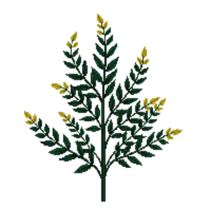

Mahonia 'Charity'
Mahonia x media 'Charity'

Mahonia 'Charity' is a shrub for focal point, structure, suited to shade and partial shade and clay or loam, flowering Nov, Dec, Jan, Feb.
| Type | Shrub |
|---|---|
| Mature height | 250 cm |
| Spread | 250 cm |
| Aspect | shade and partial shade |
| Foliage | Evergreen |
| Hardiness | USDA 7a-9a, RHS H4 |
| Pollinator-friendly | Yes |
| Pet-safe | Yes |
Where to use it in a border
At around 250 cm, it sits best toward the back of a border, or on its own as a focal point with room around it. Give it about 250 cm of room to spread. It is hardy across USDA zones 7a to 9a and rated H4 by the RHS, so check it suits your area before planting.
It appears in our lists of shade, clay soil, evergreen plants, pollinator-friendly plants, pet-safe plants.
Flowering through the year
Worth knowing
- Evergreen, so it keeps the border furnished through winter.
- It tolerates a shaded, north-facing spot.
- Its flowers are valued by bees and other pollinators.
Good companions
Plants that share its conditions and style, chosen to complement its place in the border:
- Bugleto edge in front
- Cascade Oregon Grapeto edge in front
- Chinese Wild Gingerto edge in front
- Cinnamon Fernto edge in front
- Creeping Phloxto edge in front
- Creeping Phlox 'Sherwood Purple'to edge in front
Garden styles
Shade cottage Wildlife garden Woodland
See Mahonia 'Charity' set in a full border, with spacing and companions worked out for your own conditions, in Border Builder.
Sources
Bloom timing and hardiness drawn from:
- MoBot Plant Finder (missouribotanicalgarden.org, 2026-05)
- NC State Extension (plants.ces.ncsu.edu, 2026-05)
- RHS (rhs.org.uk, 2026-05)